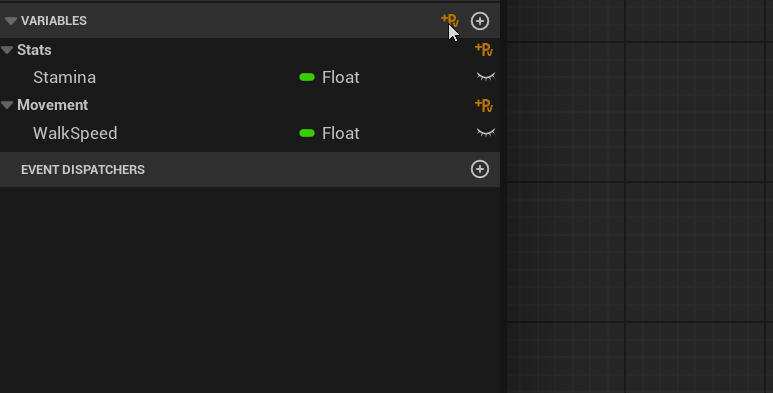
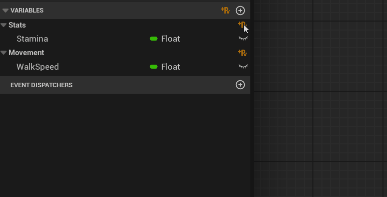
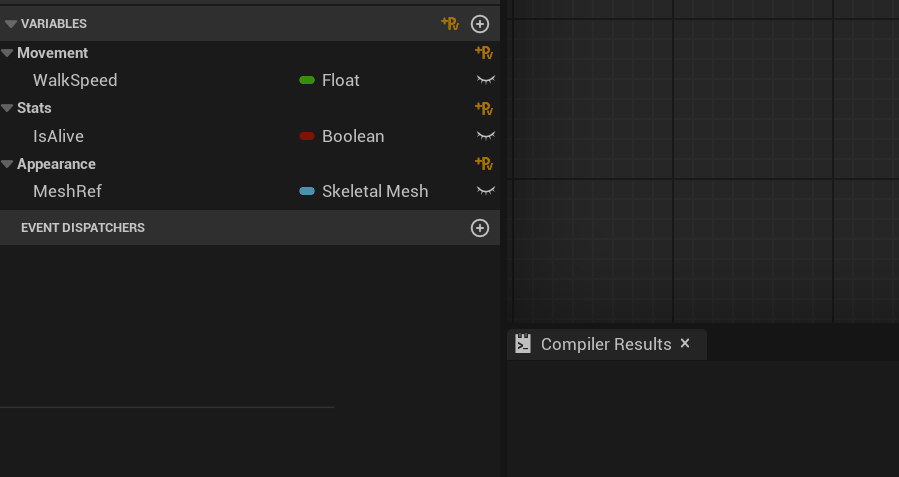
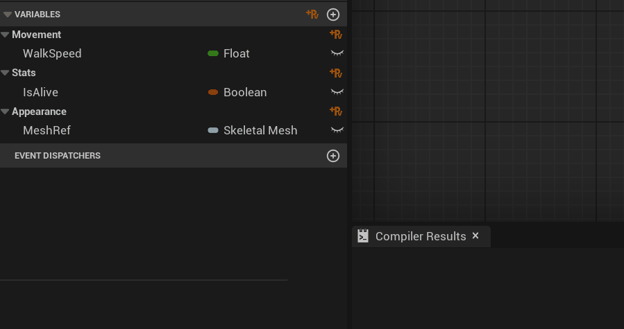
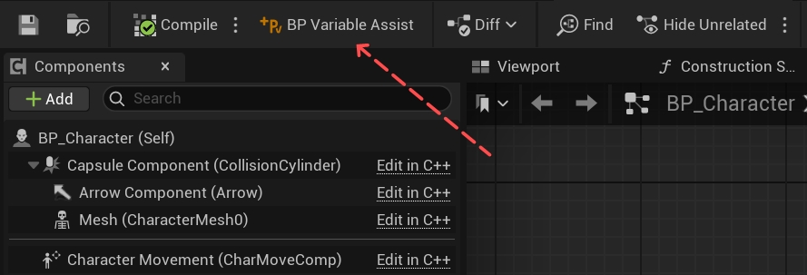
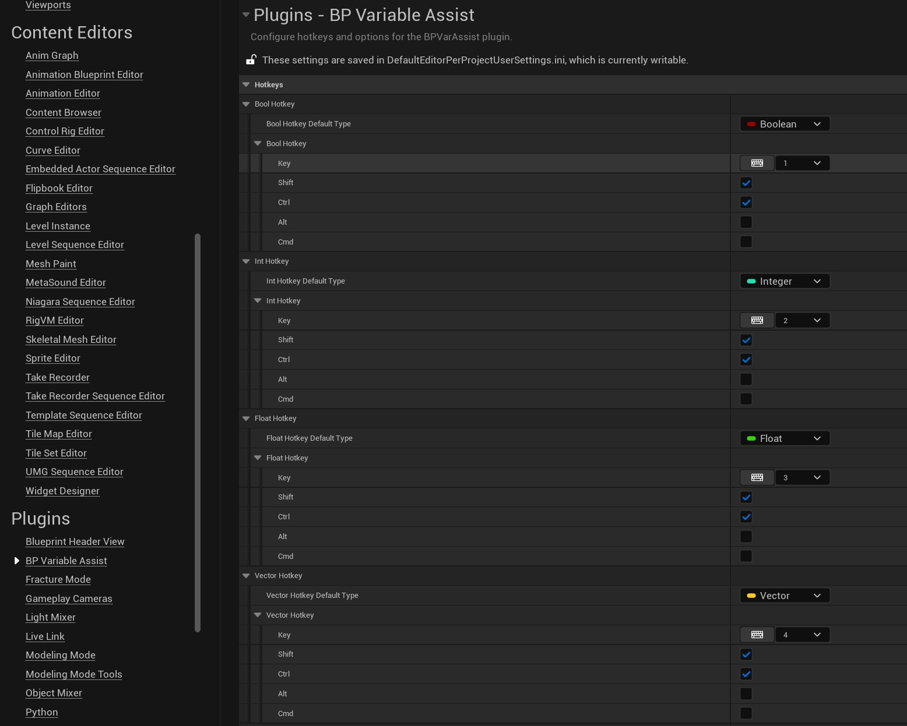

BP Variable Assist
A minimal, modern Unreal Engine plugin for ultra-fast Blueprint variable management.

Features
-
One-click variable creation
Add new variables instantly with a single click or hotkey. -
Category-aware insertion
Adds variables directly to the category you choose—by button or by mouse hover. -
Customizable hotkeys
Configure shortcuts for all variable types. -
Toolbar integration
Access plugin actions from the Blueprint Editor toolbar. -
Personalized workflow
Set your preferences, variable types, and icon theme.
Add Variables by Button
Adding to Default Category
Add a private variable (with advanced display) to the Default category with one click:

"Default" category
Private Advanced Display
Adding to Custom Category
Add a private variable (with advanced display) to any custom category you choose:

Specified category
Private Advanced Display
Add Variables by Hotkey
Assign hotkeys to instantly add variables of any type.
Supports both Default and hovered categories.
| Hotkey | Variable Type |
|---|---|
| Ctrl+Shift+1 | Bool |
| Ctrl+Shift+2 | Int |
| Ctrl+Shift+3 | Float |
| Ctrl+Shift+4 | Vector |
| Ctrl+Shift+5 | Rotator |
| Ctrl+Shift+` | Last Used Type |
Adding to Default Category (Hotkey)

"Default" category
Private Advanced Display
Adding to Custom/Hovered Category (Hotkey)

Hovered category
Private Advanced Display
Toolbar Integration
Find the BPVarAssist button in your Blueprint Editor toolbar for quick access to plugin settings.

BPVarAssist toolbar button in Blueprint Editor
Settings
Personalize the plugin to fit your workflow.
- Remap hotkeys
- Set default variable types
- Choose icon theme (Gold or Platinum)

Editor Preferences: BP Variable Assist plugin section
Need Help?
Contact GeekTech or visit plugin website on fab for updates and documentation.
BPVarAssist is developed and maintained by GeekTech.
Compatible with Unreal Engine 5.1-5.6+
Ready to supercharge your Blueprint workflow? Get BPVarAssist now!